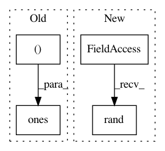

2593c5c7f473079153092e059ae18b253f33816d,chainer_/chainercv2/models/simplepose_coco.py,,_test,#,487
Before Change
(y.shape[3] == x.shape[3] // 4))
center = np.zeros((batch, 2), np.float32)
scale = np.ones((batch, 2), np.float32)
z, _ = net.calc_pose(y, center, scale)
assert (z.shape[0] == batch)
After Change
assert (model != simplepose_resneta152b_coco or weight_count == 68654705)
batch = 14
x = np.random.rand(batch, 3, in_size[0], in_size[1]).astype(np.float32)
y = net(x)
assert ((y.shape[0] == batch) and (y.shape[1] == keypoints))
if return_heatmap:
In pattern: SUPERPATTERN
Frequency: 3
Non-data size: 4
Instances
Project Name: osmr/imgclsmob
Commit Name: 2593c5c7f473079153092e059ae18b253f33816d
Time: 2020-02-15
Author: osemery@gmail.com
File Name: chainer_/chainercv2/models/simplepose_coco.py
Class Name:
Method Name: _test
Project Name: keras-team/keras
Commit Name: 9d15c9611570bd3ecab52ed924c69a60ac3b2784
Time: 2016-01-03
Author: julien@fhtagn.net
File Name: tests/keras/layers/test_convolutional.py
Class Name:
Method Name: test_upsampling_2d
Project Name: SheffieldML/GPy
Commit Name: ee5a562c67a850740207cfcc52cffd01afc35c78
Time: 2015-10-22
Author: z.dai@sheffield.ac.uk
File Name: GPy/testing/kernel_tests.py
Class Name: Kern_check_model
Method Name: __init__